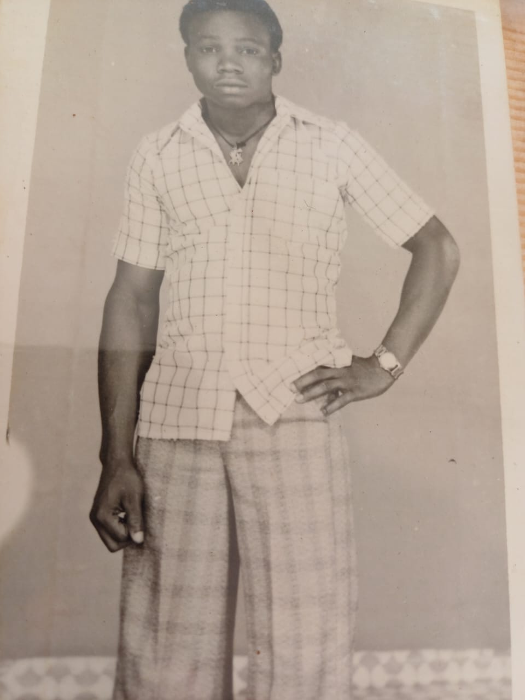

Tribute Of Three Wonderful Men In MY Life
Justin Ikejioha Okafor
Ikejioha Okafor was born in a small town Ozara in Eastern Nigeria. He was the second child of Chief & Lolo Micheal Okafor Obiwuru and his mother, Chief & Lolo Micheal Okafor. He was the mother's favorite child and the second son.

Ikejioha justin in his young age
- Justin Ikejioha was born in Nov 1957 to Chief & Lolo Micheal Okafor Obiwuru
- He was the second child and the second son
- He was the mother's favorite child
- He did a lot of business from his young age but later settled for Building material business which he did until he died
- Ikejioha is well known for his honesty,hardworker and a man of peace

- He was married to my beautiful mother Mrs Catherine Okafor and they were blessed with 6 children,2 boys and 4 girls
- He was a member of Night of st John and held many positions in the church
- He was a good Dad to all his Children
- He was a lover of education

Keep resting Dad, I love you
UCHECHUKWU SAMSON Okafor
Was the first son of Sir & Lady Ikejioha Okafor. He was the first child and son.His death was a very heart break one because was not sick.
- He was a husband and a father of 2 kids
- A hardworking business man who has a structed business
- He was into iron rod business
- He had a good relationship with his wife and family
- Very kind hearted and a friend of all
- He died before his 34th birthday
BARTHOLOMEW UDESILANNA OkAFOR
Udesilanna Okafor was born in a small town Ozara in Eastern Nigeria. He was the six child of Chief & Lolo Micheal Okafor Obiwuru.He was brutally killed.
- He was a philanthropist and a well known kinded hearted man
- He was a man of truth and till he died he stood for the truth
- He was a memeber of st knight of st john international
- A full business man and very hardworking